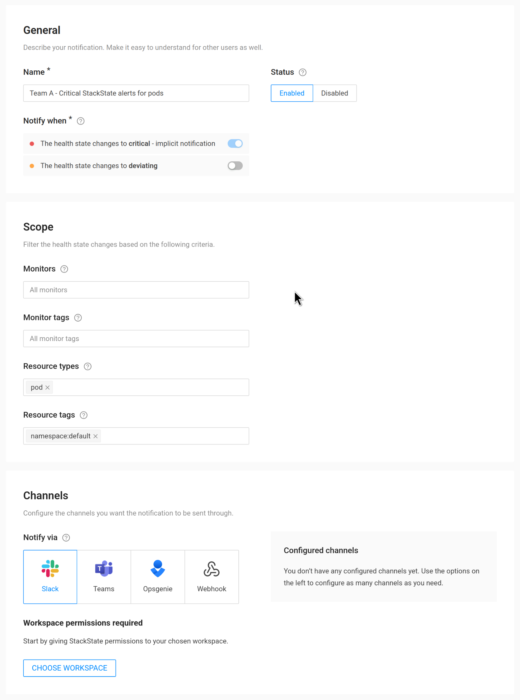

|
この文書は自動機械翻訳技術を使用して翻訳されています。 正確な翻訳を提供するように努めておりますが、翻訳された内容の完全性、正確性、信頼性については一切保証いたしません。 相違がある場合は、元の英語版 英語 が優先され、正式なテキストとなります。 |
通知を設定する
新しい通知を設定するための手順は次のとおりです:
新しい通知を作成する
SUSE Observability UIのハンバーガーメニューの下半分にあるリンクから通知ページを開きます。これにより、すでに設定されているすべての通知の概要が表示され、そのステータスも確認できます。
希望する通知がすでに存在するかどうかを確認できます。存在しない場合は、「新しい通知を追加」ボタンで新しい通知を作成してください。
通知するタイミングを設定する

通知を設定する:
-
名前 - 短いが、この通知の意図を説明する名前を選択してください。これは通知の概要での参照用です。
-
ステータス - 通知は、不要な場合やノイズが多い場合などに、一時的に無効にすることができます。
-
通知するタイミング - 重要な健康状態は常に通知をトリガーしますが、オプションで逸脱した状態も含めることができます。
-
スコープ - 例として、デフォルトのKubernetesネームスペース内のポッドに対するすべてのモニターの健康状態が送信されます。この選択を変更するには、スコープセクションの利用可能なフィルターを使用してください。
スコープ
可能なスコープフィルターは4つあります。デフォルトでは、各重要（およびオプションで逸脱した）健康状態に対して通知が送信されます。フィルターはこの範囲を制限するために使用されます。健康状態は、すべてのフィルターに一致する場合にのみ通知が行われます。
-
次について監視します。1つ以上の特定のモニターを選択してください。選択したモニターの健康状態に対してのみ通知が送信されます。
-
モニタータグ:1つ以上のモニタータグを選択してください。選択したタグのいずれかを持つモニターの健康状態に対してのみ通知が送信されます。
-
コンポーネントタイプ:1つ以上のコンポーネントタイプを選択してください。選択したタイプのコンポーネントの健康状態に対してのみ通知が送信されます。
-
コンポーネントタグ:1つ以上のコンポーネントタグを選択してください。選択されたタグの各異なるキーごとに、一致する値を持つコンポーネントの健康状態に対してのみ通知が送信されます。
例のコンポーネントタグ
選択したタグは [ k8s-scope:prod-us/checkout, k8s-scope:prod-emea/checkout, team:blue ] です。 この場合のキーは k8s-scope と team です。
これらのコンポーネントが一致します：
-
タグ [
k8s-scope:prod-emea/checkout,team:blue] を持つコンポーネント -
タグ [
k8s-scope:prod-us/checkout,team:blue] を持つコンポーネント
これらのコンポーネントは一致しません：
-
タグ [
k8s-scope:prod-emea/checkout] を持つコンポーネント -
タグ [
k8s-scope:prod-us/checkout,team:green] を持つコンポーネント -
タグ [
k8s-scope:prod-emea/carts,team:blue] を持つコンポーネント